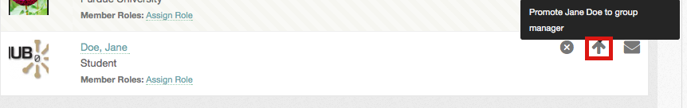

Hub users
Member functions
Everything about a group's membership happens on its Members tab: inviting people, approving requests, handing out roles, promoting managers and removing members.
The Members tab
The tab is only open to signed-in users; a visitor is sent to the login page even when the tab is set to Any HUB Visitor.
Four filters run along the top, each with a count:
| Filter | Who it lists |
|---|---|
| Members | Everyone in the group |
| Managers | The members who manage it |
| Pending | People who have asked to join. Managers only |
| Invitees | People who have been invited but have not accepted. Managers only |
A search box sits above them. Ordinary members must search before they see anyone — the Members list starts empty, under the heading Search the group member directory, and fills in once you type a name. Managers see the whole list straight away.
Each row shows the member's photo, name, organisation, any roles they hold and, if the hub uses them, the date their membership ends. An Online now marker shows who is signed in. Message opens a message to that person; Message All at the top of the list writes to everyone the current filter shows.
Inviting people
Group managers, and members holding a role with Invite New Members, can invite both hub members and people who have no account yet. The entry is missing on a Closed group.
- Open the group.
- Select Invite Members, from the Group Manager menu or from the Members tab.
- In Names/Email Addresses, type names, usernames or email addresses separated by commas. An autocompleter suggests registered members as you type.
- Optionally write a message in Customize message sent to invitees.
- Select Send Invites.
The page then reports which invitations went out and which entries it could not use. Someone who is already a member, already invited, or not a valid address comes back in the failures list.
An invited hub member sees Accept Invitation and Decline Invitation
on the group page and in the Group Invites section of /groups. An
invitation sent to an email address appears in the Invitees list as the
address itself until it is taken up.
To withdraw an invitation, open the Invitees filter and select Cancel on the row. You can edit the note the person receives.
Approving membership requests
On a Restricted group, requests land in the Pending filter, along with the reason each applicant gave.
- Approve admits them.
- Deny opens a form where you can edit the reply they get. Denying is not final: a denied user may apply again.
Roles
A role is a named set of extra permissions inside one group. It lets a member help run the group without being made a manager.
A role carries a name and any of three permissions:
- Invite New Members
- Edit Group Settings
- Create/Edit Group Pages & Categories
Creating a role
- Open the Members tab.
- Select Add a Member Role.
- Give it a Role Name and tick the permissions it should carry.
- Select Save.
Assigning a role
- Find the member in the Members or Managers list.
- Select Assign Role on their row.
- Pick the role and confirm.
A member's roles are listed on their row. The small x beside a role takes it away again. Selecting the role's name filters the list to everyone who holds it.
Promoting and demoting managers
A group can have as many managers as it needs.
- Open the Members or Managers filter.
- Find the member and use the arrow button on their row.
The arrow points up for an ordinary member — select it to Promote them to manager. It points down for a manager — select it to Demote them. The change is saved immediately.

The last remaining manager cannot be demoted or removed, so a group is never left without one. Demote them from the administrator interface if you really need to; see Groups.
Removing a member
Remove on a member's row cancels their membership. You can edit the note they receive. A removed member may apply to join again.
Membership end dates
If the hub allows time-limited memberships, a manager can put an end date on one. When the date passes the member is removed automatically.
- Open the Members or Managers filter.
- Select set an end date — or change end date — on the member's row.
- Set Ends on, or tick Remove the end date and make this membership permanent.
- Save.
The hub may cap how far ahead the date can be; the form says so when it does. Everyone sees their own end date at the top of the member list, whether or not it is close.
Leaving a group
Open the group, open the Group Member menu and select Cancel Group Membership. A manager can only leave if the group has another manager.
Rewritten and checked against 2.4-main @ 1924c22171 on 2026-09-09.